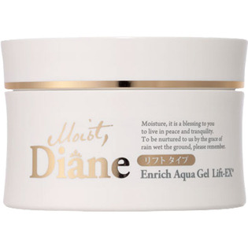

返回列表
产品名称：モイスト・ダイアン エンリッチアクアゲル リフトＥＸ

ネイチャーラボ モイスト・ダイアン エンリッチアクアゲル リフトＥＸ １５０ｇ
メーカー ネイチャーラボ
JANコード 4560119223210
商品の特徴
リフトタイプ
- 成分・分量
- ＜成分＞
水、BG、グリセリン、スクワラン、トチャカエキス、ポリクオタニウム-51、金、白金、ユビキノン、ビタミンA油、トコフェロール、リン酸アスコルビルMg、テトラヘキシルデカン酸アスコルビル、ダイズ種子エキス、水溶性コラーゲン、加水分解コラーゲン、ヒアルロン酸Na、加水分解ヒアルロン酸、マカデミアナッツ油、ホホバ種子油、レシチン、グリチルリチン酸2K、カンゾウ根エキス、PCA-Na、PCA、アルギニン、アスパラギン酸、グリシン、アラニン、セリン、バリン、プロリン、トレオニン、イソロイシン、ヒスチジン、フェニルアラニン、スギナエキス、ホップ花エキス、セイヨウアカマツ球果エキス、レモン果実エキス、ローズマリー葉エキス、ジイソステアリン酸ポリグリセリル-10、カルボマー、水酸化K、フェノキシエタノール、メチルパラベン
- 用法及び用量
- 洗顔後、適量（大きめのさくらんぼ１ヶ程度）をお顔全体になじませてご使用ください。乾燥が気になる部分には、重ねづけをしてください。